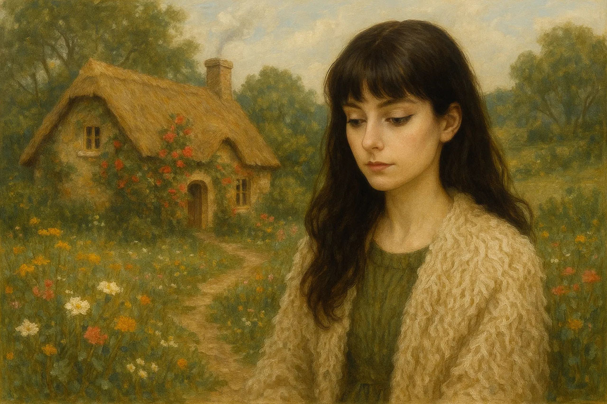

I'm Tylar — a photography lover, website design student, and someone who finds peace in the simple beauty of rural life.
This website is a glimpse into my world: from sleepy cows to curious cats, and a small family CBD business that means a lot to us.
